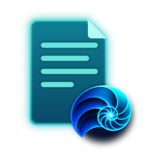
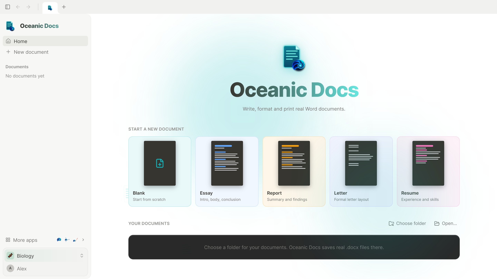
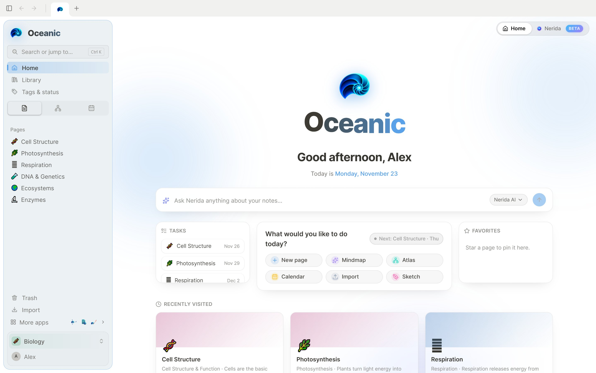
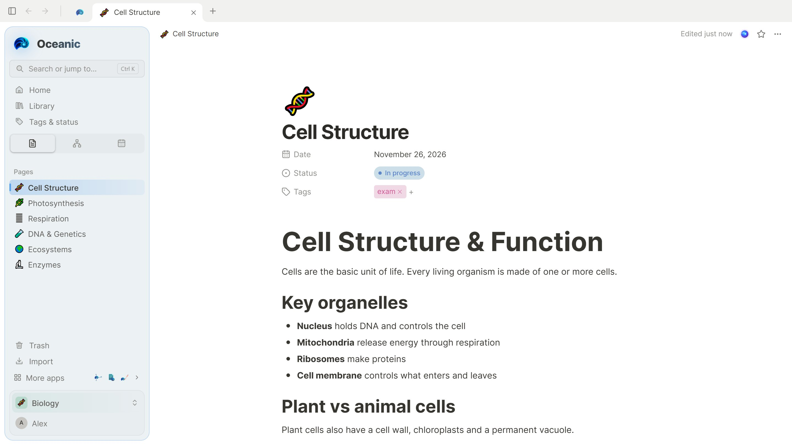
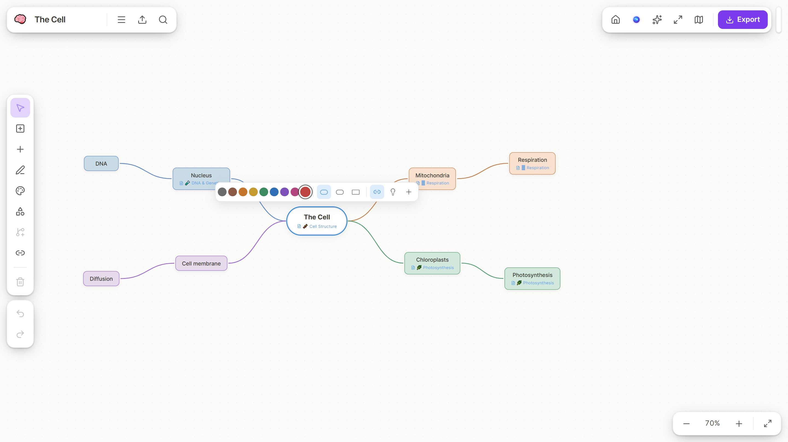
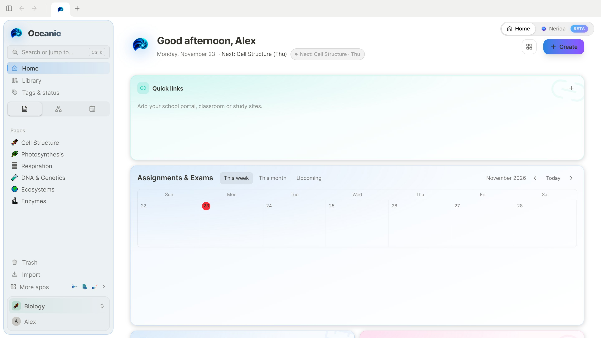
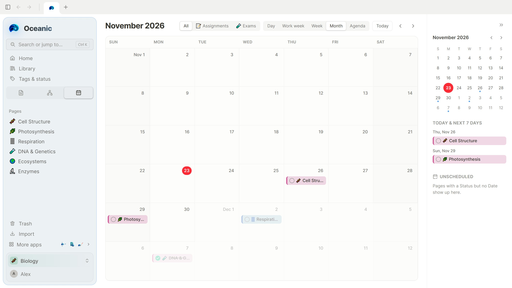
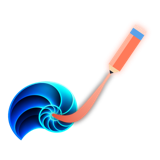

Docs
A focused writing space for essays and assignments. Opens and saves real .docx files, with templates for essays, reports and letters.

Notes, mind maps, docs, flashcards and a calendar in one free app, with an AI that reads your notes without sending them anywhere.

Oceanic is a quiet place to learn. Write notes, map ideas, draft essays and revise, all in one app that lives on your computer.
Write in blocks and nest pages inside pages. Every page has a date, a status and tags, so it's always clear what's due and what's done.

Lay a topic out visually. Each branch can link back to the note it came from, so a mind map is a way into your material instead of a copy of it.

Write question :: answer in any note and it becomes a flashcard. Review with spaced repetition, test yourself, and see every exam and assignment on the calendar.
Tasks, tests and exam countdowns on one dashboard.


Notes and mind maps sit next to a Word-style writing app and a sketch pad, so an essay, its research and its diagrams live together.

A focused writing space for essays and assignments. Opens and saves real .docx files, with templates for essays, reports and letters.


Draw diagrams, graphs and doodles freely, then drop them into your notes.

Highlight, underline and add sticky notes to PDFs, quote a page into a note, or ask Nerida about a passage.

Nerida Beta
Nerida reads the notes and files you attach and turns them into quizzes, flashcards and explanations. With a local model, it works offline and nothing leaves your device.
Built by one person and shaped by the people who use it.
A map of everything you know. Atlas links your pages by topic and lets you label how ideas relate, so you can see the shape of a subject at a glance.
More ways to practice with flashcards and spaced repetition.
Your notes and flashcards on your phone, once the desktop features are finished.
Have an idea? Suggest it on GitHub.
Yes. No account, no subscription and no ads.
Not unless you connect a cloud AI provider yourself. Otherwise everything stays in the folder you picked.
No. With a local model (llama.cpp or Ollama), Nerida works fully offline. Only cloud providers you choose to connect need the internet.
In the notes folder you chose on first launch. They're yours, and you can export them anytime.
Windows, macOS and Linux, plus an Android app (APK). iOS isn't available yet.
Oceanic isn't code-signed yet. On Windows, choose More info, then Run anyway. On macOS, right-click the app and choose Open.
Yes. Import Markdown, Word, plain text, HTML or a Notion export.
Oceanic is free and takes a minute to install. Updates install themselves.
Download Oceanic64-bit installer (.exe)
Download for WindowsDisk image (.dmg)
Download for macOSAppImage, .deb or .rpm
Download for LinuxAPK for arm64 phones
Download for AndroidOceanic isn't code-signed yet, so your system may warn you the first time. On Android, allow installs from your browser. See all releases.
What changed in recent releases. Full notes live on GitHub.
Loading recent releases…
Oceanic is built and maintained by MystiTheDev, an independent developer making the study app they wanted to use: fast, private and free. Feedback shapes what gets built next.